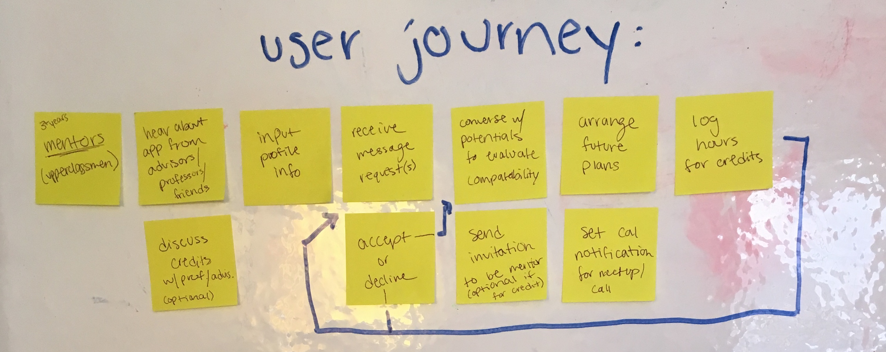
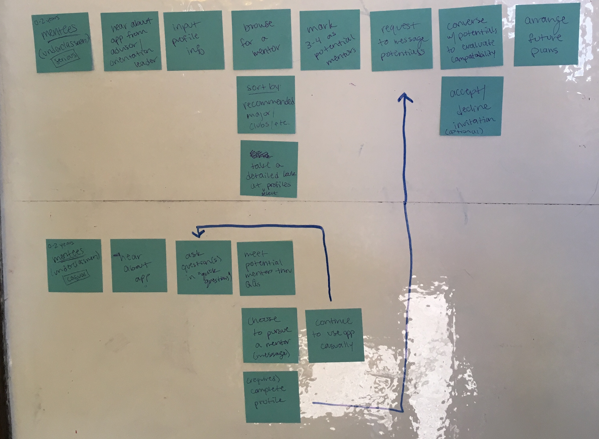
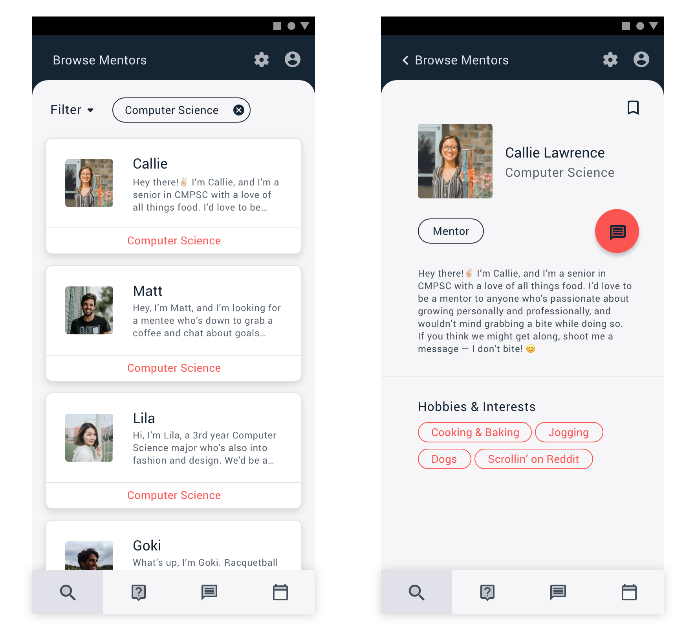
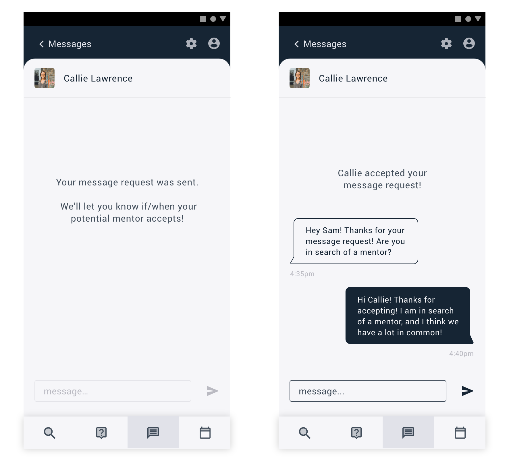
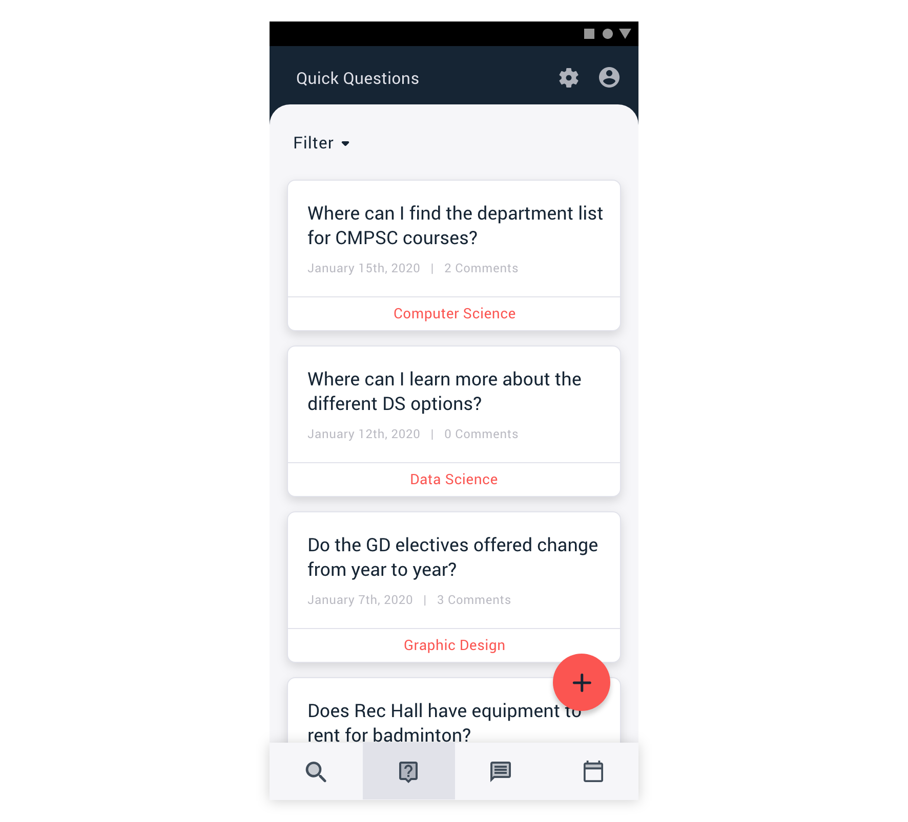

Mentor Up
A mobile application to help underclassmen connect with upperclassmen mentors at Penn State. This application was designed as a part of the Google design exercise for the Summer 2020 UX Design Internship.
Context: Google Design Exercise 2020
Prompt: Your school wants to strengthen the community by encouraging experienced students to connect with new students and help them adjust to campus life. Design an experience that allows mentors and mentees to discover each other. Consider the needs of both mentors and mentees, including how someone may become a mentor and how to connect mentors to mentees.
research
The first part of my process was jotting down some initial thoughts and questions about the prompt and considerations I should plan on making.
I then moved on to sending a brief survey out to some under and upperclassmen peers, to get a starting point in terms of users' general reactions to this application. I sent separate surveys to under/upperclassmen, both asking three questions:
- How interested are you in having an upper(under)classman as a mentor(ee)?
- Which characteristics would be important for you and your mentor(ee) to have in common?
- Are there any reasons you'd be hesitant to have a student mentor(ee)?
These survey results helped me outline some key goals to focus on:
- Present relevant information to highlight compatibility.
- Increase interest in upperclassmen to become mentors.
- Provide both groups with transparent and flexible relationships.
planning
My next step was organizing all the information I had about my users, which was largely info gathered in the surveys.
I also began brainstorming potential features for my application based on the needs and concerns of my users. During this phase, I tried to get all my thoughts on the board, without deciding whether or not they were the best option.
 Once I narrowed features and concepts down, I created a very basic user journey for three users:
- Mentors
- Mentees (serious)
- Mentees (casual)
Though the underclassmen I surveyed were overwhelmingly in favor of having student mentors, I still anticipate that some will be intimidated by the process. For this group, I created a more gradual experience that would hopefully lead them to finding a mentor at their own pace.
wireframes & low fidelity
My next move was sketching some wireframe flows on my (well-loved apartment) whiteboard. The flows are fairly similar for mentors vs. mentees, but I still chose to sketch a separate flow for each so that I could distinguish them better in my mind and get a more concrete idea of the differences.
At this stage I settled on having four bottom navigation tabs, since this seems like the least daunting form of navigation, and some users may be hesitant to explore. The tabs include:
- Browse Mentors(ees)
- Quick Questions
- Messages
- Meetups & Time Log
Next, I created a low fidelity mockups of the application's flow. At this stage I chose to mock up only the flow for mentees. Like I said earlier, the two flows are very similar, and I got a good enough grasp on the differences from wireframing, so making a whole other flow seemed unnecessary, and a poor use of time.
This stage helped me establish consistency throughout the app's design, again ensuring that the learning curve is as minimal as possible.
I also further developed the onboarding process and which questions would be asked of the users. In order to make this a
succinct but valuable process, I based these questions on what users deemed important in the surveys.
Plus, users will sign in with their Penn State credentials, verifying that they are a student and determining whether
they are an upper or underclassmen, and therefore if they qualify to be a mentor or mentee.
The last aspect I fleshed out in this stage is the voice of the app. By using a casual, inviting voice I hope to accomplish two things:
- Mentees will feel less intimidated, and therefore more open to reach out.
- Mentors will view it more as building relationships with people like them, instead of just another formal, school-run service.
high fidelity
When considering the visual design of this app, my biggest priority was setting it apart from traditional school-run apps, as these tend to be a bit dated with overdone color palettes (at least at Penn State). I wanted to make this app seem separate from the school, so that students would be more interested in it.
I designed this Material UI using a modern color palette, rounded elements, and visually interesting, yet simple icons. These choices mimic the way I hope students will feel when using the app: comfortable, but eager to be bold.
Students' answers in my surveys showed that some of the most important considerations to both under and upperclassmen are major and personality when choosing a mentor(ee). So, I highlighted bios and descriptions in the browse view, allowing users to get a good idea of these aspects quickly. Users can also filter by major or interest on the browse page, if they so choose.
Giving users the flexibility to describe themselves in a few sentences also helps to give the app itself more personality, which moves towards strengthening the Penn State community as a whole.
In profile details, a user can choose to send someone a message request, and they can also save that person, with the ability to filter their browsing by those they've saved.
Both mentees and mentors are required to request to send their first message to someone, in an effort to give the most control to the user as possible. Once a message request has been accepted, this is where I anticipate returning users will spend the majority of their time, planning meetups, asking for advice, etc.
The main goal of the Quick Questions page is to help those who are hesitant get their feet wet before they make a commitment. For mentees, this looks like asking a question or two and seeing the benefit of connecting with upperclassmen. For mentors, it can look like testing out a mini-mentorship and seeing that it doesn't have to be a formal, every day commitment.
A note on mentors:
As I mentioned earlier, there would be some slight differences in the way mentors experience the app. The main differences include the ability to:
- View both mentor and mentee profiles
- Create meetups for a mentee they are in contact with
- Comment on Quick Questions
- Log time spent mentoring to potentially receive course credits (further ahead)
In this current solution, any upperclassman at Penn State is eligible to become a mentor. However, in the future, once the app has more users, there would ideally be an interview system in which current mentors evaluate potential mentors. For the time being, I chose not to apply this limitation, as there are already obstacles for encouraging students to become mentors.
a step further
Throughout this exercise, I had multiple brainstorming sessions on one obstacle: how to encourage college students to use this app. With some exceptions, most college students are reluctant to do something if the benefits are not immediately clear.
One potential solution to this dilemma is making this app more social. I mean this in the same way that when a college student hears a song or sees a meme that reminds them of a friend, they want to share it with them. Placing a "Recommend to a Friend" option on each mentor or mentee's profile would serve as a reminder that it could be kind of fun to look through profiles until you find one that reminds you of a friend.
This button would allow users to share the selected profile on their external messaging app, helping to bring new users to the mentor app. Existing users would then ideally act as a highly personalized recommendation system that reaches beyond the app's walls.